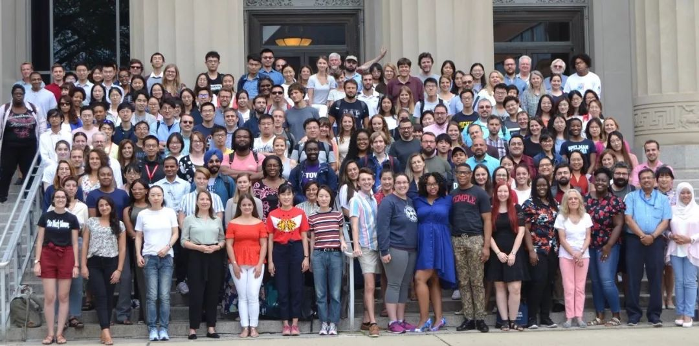

收录于合集 #专栏文章 11个
作者简介： 周源，政文观止Poliview特邀作者，日本神户大学法学研究科政治学专业研究生，主要研究兴趣为量化研究方法、文本分析与政治心理学。

什么是ICPSR Summer Program?
ICPSR是Inter-university Consortium for Political and Social Research的简写，是总部位于美国密歇根大学的致力于收集、保存各类社会科学数据并促进其存档数据的学术利用的校际联盟。ICPSR成立于1962年，目前已有来自世界各国的750多家大学以及研究机构加入，是世界上最大的社会科学数据档案馆。
ICPSR每年夏天都会举办社会科学量化研究方法暑期项目（Summer Program in Quantitative Methods of Social Research），提供从统计学基础到高级计量经济学的各类实证研究方法课程。这些课程既有平日每天两小时为期四周的关于某种研究方法的系统授课（workshop），也有关于数学和统计软件使用的小型讲义（lecture），对希望掌握量化研究方法的同学来说是非常不错的学习机会。
ICPSR暑期项目分为两个学期（session），每个学期为期四周。一般第一学期从六月下旬持续到七月下旬，第二学期从七月下旬持续到八月下旬。参加者可以选择两个学期全部参加，也可以根据自己想选的课程只参加某一个学期。ICPSR的参加者以美国高校的在读博士生为主，但是每年都会吸引不少来自欧洲、亚洲、乃至非洲的学生和老师参加。因此，参加该项目也是一个与世界各国学者进行对话交流的很好的机会。
ICPSR Summer Program的课程体系
如前所说，ICPSR暑期项目的课程主要包括workshop和lecture。Workshop一般安排在周一至周五白天进行，为期四周，大致相当于将平时一个学期的课时量压缩在一个月内进行。Lecture的时间根据内容长短不一，例如关于LaTeX入门的lecture仅在每学期第一天晚上开设一次，时间为两个小时；而关于社会科学数学的lecture分为三个难度等级，周一至周五每天上午11点到12点三个lecture同时进行，期间为整个第一学期。另外，在项目期间晚上会不定期举办学术讲座（Blalock Lecture），由一些在某方法领域做出公认成果的学者来讲述他们的研究或者经验。
暑期项目的参加者需要根据自己对量化研究方法的掌握水平来选择适合自己的课程。从课程负担来说，选择1～2个workshop加1～2个lecture是对大多数参加者来说比较合理的做法。每个workshop期间授课教师都会布置4次左右的课后作业，参与者可以选择参与课程并完成课后作业，这样便可以在workshop结束之后获得一个参加该课程的成绩。Lecture与workshop不同，授课教师并不会发布作业，参与者只需上课学习便可，最后也不会获得关于该课程的成绩。不同课程的参加者人数会有很大差别，但一般会在20人左右。笔者参加的今年新开设的机器学习课程的学生人数多达50以上，而贝叶斯模型2课程只有大约10人参加。完整的workshop和lecture列表可以在ICPSR暑期项目网站查询，以下仅就笔者这次参加的一些课程做一简单介绍。
在第一学期，笔者参加了Bayesian Modeling for the Social Sciences I: Introduction and Application、Machine Learning: Applications in Social Science Research以及Mathematics for Social Scientists, III三门课程。贝叶斯模型1是笔者本次收获最大的一门课程。该课程从对传统频率学派的批判入手，渐渐引入贝叶斯统计思想，然后将社会科学中各类模型（从线性模型到广义线性模型，到测量模型，再到多层次模型）的贝叶斯估计方法一一详细讲解。而且，授课教师会将slides中图表的replication code全部传到课程文件夹，使学生能够清晰完整地理解模型的算法过程。另外值得一说的是，这门课在四周内的作业多达10次，而需要取得成绩的参加者要求至少完成7次。因此，整个第一学期的大部分时间几乎都被用在了这门课程的预习、复习以及作业上面。机器学习课程坦白来说略有一点失望，因为几乎整个课程都在讲授各种机器学习算法的思想，而很少谈如何在社会科学中使用机器学习方法。由于笔者去年修过几门机器学习算法课程，这门课程上得相对比较轻松，课后作业也只有三次（对于第一次接触机器学习的同学可能会花费较多时间）。数学3应该是整个暑期项目中最令人失望的课程。原因在于，该课程老师并没有自己制作slides，每次课程都是根据他从其他地方寻找的资料来进行大概的讲解。由于课程资料来自东拼西凑，内容的组织显得非常错乱，经常是今天概率论，明天微积分，后天又回到概率论。上课的人数也随着课程的进行不断流失，第一次课的时候，有30多人参加了该课程，而最后一讲结束的时候，只剩下了包括笔者在内的3个人。
在第二学期，笔者参加了Empirical Modeling of Social Science Theory: Advanced Topics、Bayesian Modeling for the Social Sciences II: Advanced Topics以及Introductory/Review Lectures on Matrix Algebra。由于与自己研究的联系并不直接，实证模型这一门课笔者选择了仅仅上课而不花费时间去做作业。该门课相当于一门高级计量经济学课程，课上将交互项、纵贯数据分析、空间模型、多层次模型等模型进行了深入彻底的解剖。在上此门课程之前，笔者大致可以在统计软件中运行这些模型。然而，上课后才知道原来某个模型的原理是这样的，原来某个模型需要这样来解释，原来某个模型需要进行这样的诊断。虽然该课的很多内容笔者时至今日仍然没有搞得十分清楚明白，但是却给今后的学习打开了一片新的天地。如果说贝叶斯模型1注重贝叶斯方法的应用，贝叶斯模型2主要是帮参加者从理论上加深对于贝叶斯方法的理解。这里值得一说的是，该课程有一天专门讲解文本分析方法的LDA算法。笔者虽然很早之前便能够在统计软件中运行topic model，但完全理解它的算法过程还是在那次课程前后。矩阵代数每天上课一个小时，为期两周，内容从矩阵的定义一直到奇异值分解。也许是因为笔者目前已经掌握了线性代数的缘故，当时听上去感觉非常简单易懂。但是，笔者几年前入门线性代数时尝试过各种各样方法，一些概念经常要花几个月甚至更长的时间才慢慢地理解，整个过程是十分痛苦和漫长的。
学费及奖学金
ICPSR暑期项目的学费根据参加者的身份以及付款时间有所不同。如果是来自ICPSR会员机构的参加者，并且在5月1日之前付款的话，学费为一个学期2500美元，两个学期全部参加3700美元。据笔者所知，国内的北京大学，中国人民大学以及中央财经大学等高校拥有ICPSR的会员资格。
ICPSR每年都会为参加者提供一些奖学金申请机会，奖学金获得者将被豁免一个或两个学期的项目学费。大多数奖学金会指定申请人资格为美国高校特定专业的在读博士生，也有非常少数奖学金美国以外的参加者可以申请。笔者今年有幸获得了EITM(Empirical Implications for Theoretical Models) Institute的奖学金，因此经济负担大大减轻。在此顺便提一下EITM自身的暑期项目，该项目每年会通过竞选录取大约25名左右社会科学专业的博士生或年轻教师，进行为期3-4周的集中授课培训，并且EITM会负担参加者的费用花销。
社交活动
为了增进参加者之间的交流，ICPSR会组织一些官方社交活动，包括每学期第一天的晚上的欢迎聚会、每周三早晨的Coffee & Donuts以及单数周六下午的野餐活动。所有项目参加者、授课教师、TA（teaching assistant）以及暑期项目工作人员都可以参加，是大家相互认识交流的很好机会。在正式社交活动之外，由于参加者大多来自世界各地，平时经常会一起聚餐，购物以及附近旅行等等。据说，曾经有相识于ICPSR暑期项目的参加者最终走入了婚姻的殿堂。
安娜堡生活
这次参加ICPSR暑期项目是笔者第一次到访美国。在前往安娜堡的一个月之前，笔者申请了ICC（Inter-Cooperative Council）的宿舍。安娜堡虽然是一座并非十分繁华的城市，然而房租对来自其他国家的学生来说却十分昂贵。笔者曾经在Airbnb上面搜寻过安娜堡的民宿，结果最便宜的月租金也要大约1000美元。ICC是一个专门为大学生提供廉价住宿的机构，ICPSR暑期项目参加者也可以申请ICC宿舍，两个学期的费用一共不到1200美元。当然，入住ICC宿舍的学生每周需要承担大约一小时左右的家务劳动。笔者入住的ICC宿舍个人房间虽然不大，只有大约12平米左右，但是1楼有一个非常大的公共厨房以及休息室。而且，ICC每周都会免费为入住者提供一定量的蔬菜、水果、牛奶以及各类食材。对于长期生活在日本的笔者来说，能够尽情享用各种水果已经是非常久违的事情了。除了价格低廉以外，ICC宿舍另一个吸引人的地方在于里面可以遇到很多其他ICPSR暑期项目参加者，笔者入住期间便交到了几个非常好的朋友。
刚刚到达美国最大的感受便是没有私家车生活太不便利。在笔者宿舍步行15分钟范围之内，没有任何商店或者餐馆，大型超市更是要坐将近半小时公交车才可以到达。安娜堡的公交车一是（对习惯了国内价格的人来说）价格较高，乘坐一次1.5美元；二是车次较少，一般半小时一趟，周末甚至更少。不过，熟悉了宿舍和大学周围环境之后也就慢慢习惯了每天各种走路的生活。
密歇根大学附近有各种各样的餐馆，可以吃到来自各个国家的美食。刚到美国之时，对于如何在饭店点单以及如何支付小费总是搞不清楚。但是没过多久，笔者发现了一家非常地道的中餐馆，老板是中国人，里面从家常菜到牛肉面再到麻辣烫都可以做，从那以后笔者便成了那家餐馆的常客。当然，在饭店吃饭价格是比较贵的，一般来说一顿饭加小费要15美元左右。
距离安娜堡比较近的大城市有底特律和芝加哥，许多暑期项目参加者都会抽空去这两个城市旅行一次。由于笔者当时课业负担较重，仅仅在第二学期结束后的一天去了迪尔伯恩的福特博物馆。值得一说的是，安娜堡虽然是一座朴素的小城市，但是文化生活却相对比较丰富。在笔者刚刚抵达的六月底，为期一个月在Ann Arbor Summer Festival正在进行之中。每天晚上在密歇根大学附近的一个广场舞台上都会有乐队演出，任何人都无需门票便可参与观看，对于整天沉浸在各类统计模型之中的ICPSR参加者是不错的放松机会。而第一学期的最后一周，是Ann Arbor Art Fair的举办时间，密歇根大学附近的街道上会布满各类艺术品展卖帐篷，人们每天都会穿行在浓浓的艺术气息之中。
一点感想
笔者参加ICPSR暑期项目过程中询问过不少参加者对这个项目的感想，大多数人的感受是，虽然个别课程个别老师的讲课质量不尽人意，但总体来说参加这个项目是一个非常棒的体验，不管从学习知识来看还是从体验生活或结识朋友来看。特别是对来自量化研究方法教育比较薄弱的大学的参加者来说，ICPSR暑期项目无疑是一个比较珍贵的学习机会。不管参加者使用何种研究方法，对这种方法掌握到何种水平，一般都可以在项目中找到适合自己学习的课程。另外，与笔者所在的日本大学的课堂不同，美国的课堂互动性非常强，几乎每十分钟左右都会有学生用各种问题打断老师，老师也会不断确认学生是否听懂自己所讲的内容。大多课程的阅读和作业量也相对于日本的大学来说非常之大，但是平日每天老师和TA都会有office hour，学习和作业中遇到的问题他们都会非常热心地帮助解答。
最后想说明的一点是， 笔者虽然在研究中主要使用量化研究方法，但是并不认为量化研究方法相对于其他方法更加优越。 相反，笔者深知量化方法的局限性以及使用过程中存在的一些陷阱。笔者读过的最优秀的学术作品中，很大一部分是使用了定性研究、历史研究等非量化研究方法。 量化研究方法美在其严密的数学语言、巧妙的推论过程以及同样数据同样模型无论是谁都会做出同样结果的可重复性。 对于希望学习量化研究方法的同学，ICPSR暑期项目是一个不错的选择。
审读：杨端程
编辑：吴温泉


政文观止
微信扫一扫赞赏作者 __赞赏
已喜欢，对作者说句悄悄话
取消 __
发送给作者
发送
最多40字，当前共字
上一页 1/3 下一页
长按二维码向我转账
受苹果公司新规定影响，微信 iOS 版的赞赏功能被关闭，可通过二维码转账支持公众号。